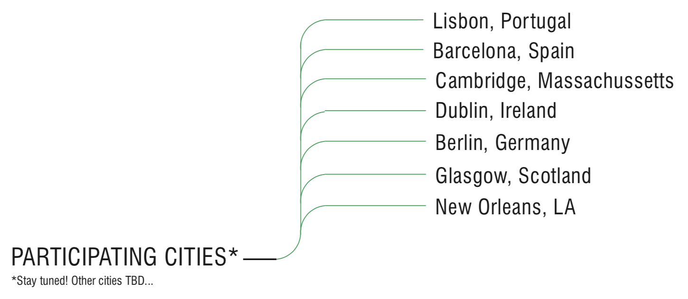

On November 30th, 2019 we'll be connecting many cities around the world -- both in-person, and remotely via video chat -- to experiment, discuss, and plan around the upcoming People's Climate Summit in early December, which will be occurring globally in parallel with The UN Climate Change Conference in Madrid.
We’ll kick off the event with a few videos on the history of internationally-coordinated media activism, then switch gears with live video/chat conversations and presentations in which we share ideas for projects, tools, interventions, and media experiments that might help coordinate and support international climate activism.
Join us! Come to one of the live events in a city near you, or start your own!
(Lisbon) Duncan Crowley - Duncan_Crowley@iscte-iul.pt
(Somerville) Don Blair - donblair@edgecollective.io
(New Orleans) Dyani Robarge - dyani@studiocicada.com